家庭旅行 · 2027 · 瑞士 × 意大利
馬特洪峰的雪、水都的運河、文藝復興的畫作 —— 一程 17 日的火車之旅，最後喺米蘭同《最後的晚餐》道別。
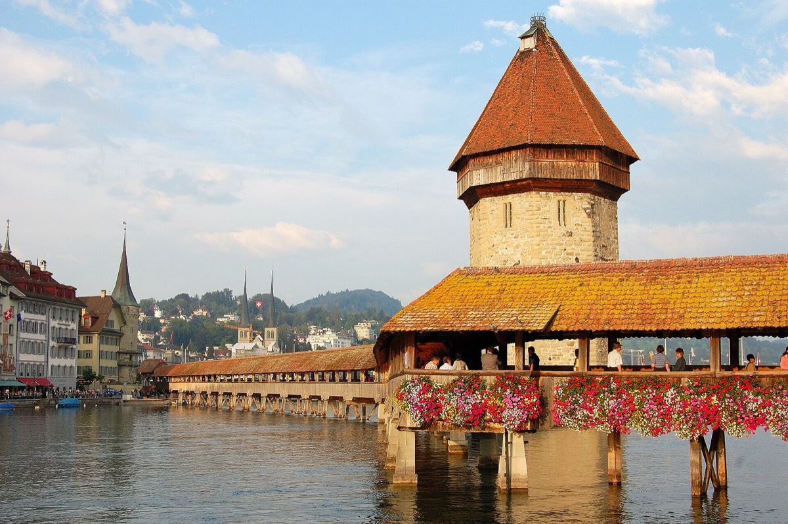
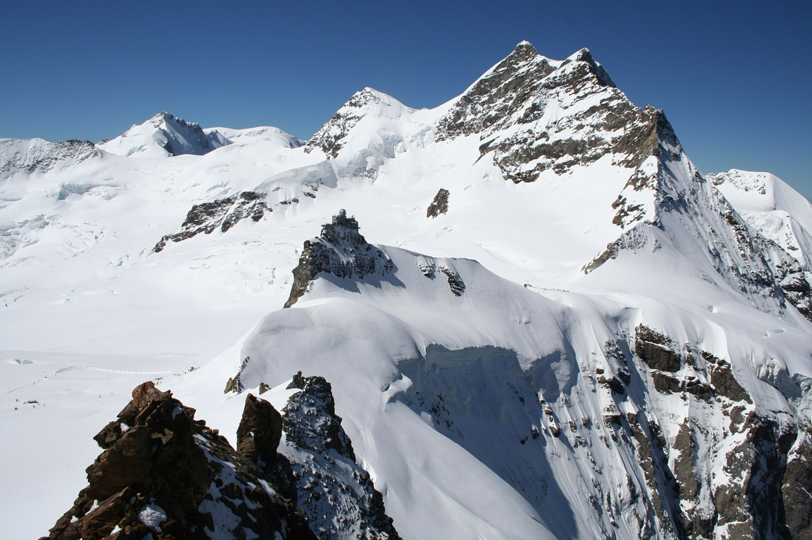
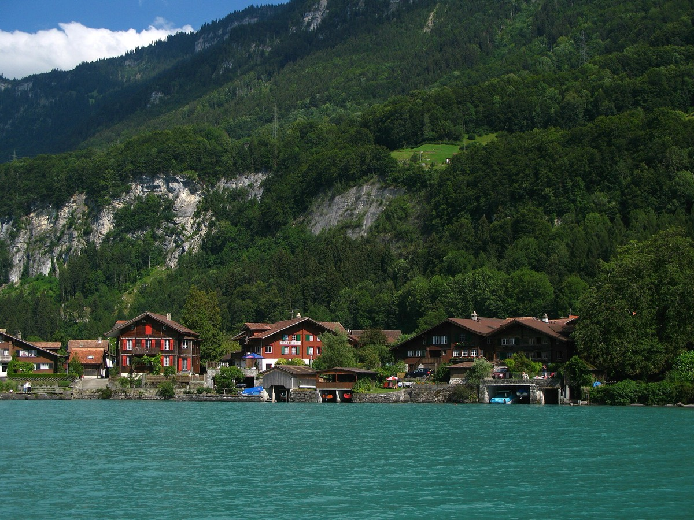
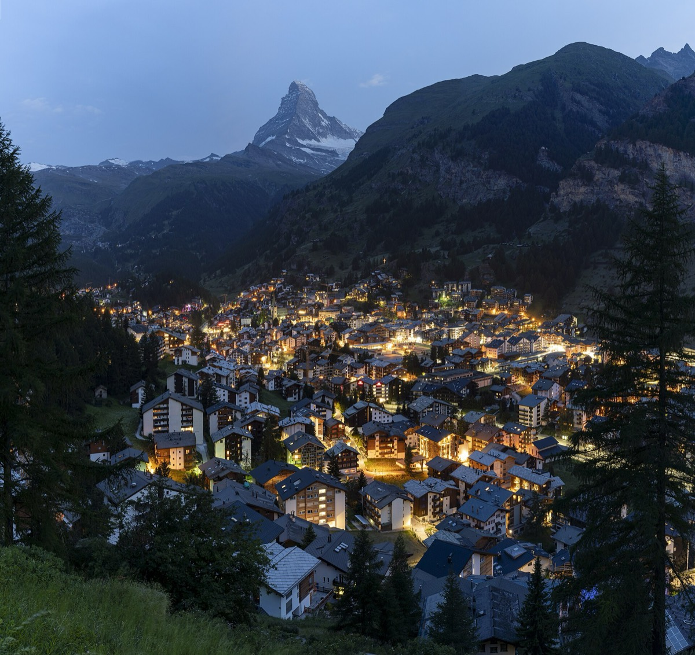
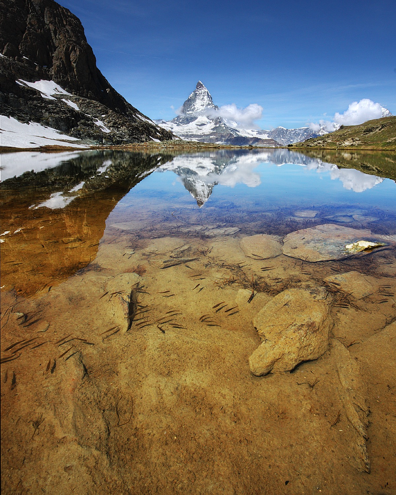
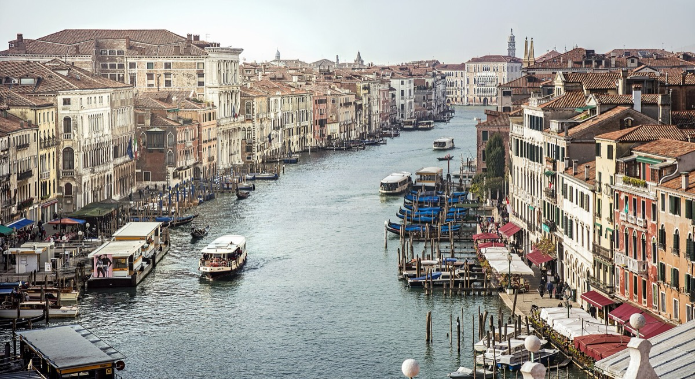
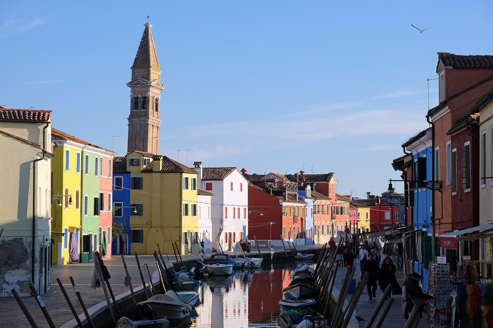
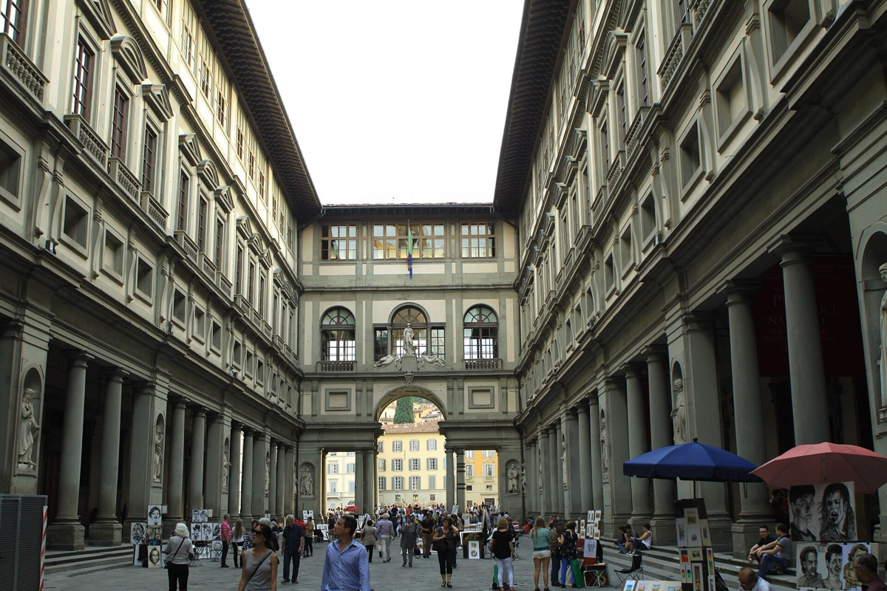
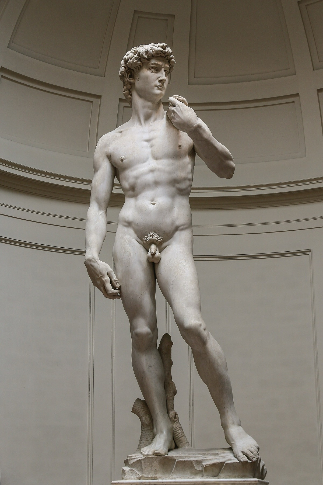
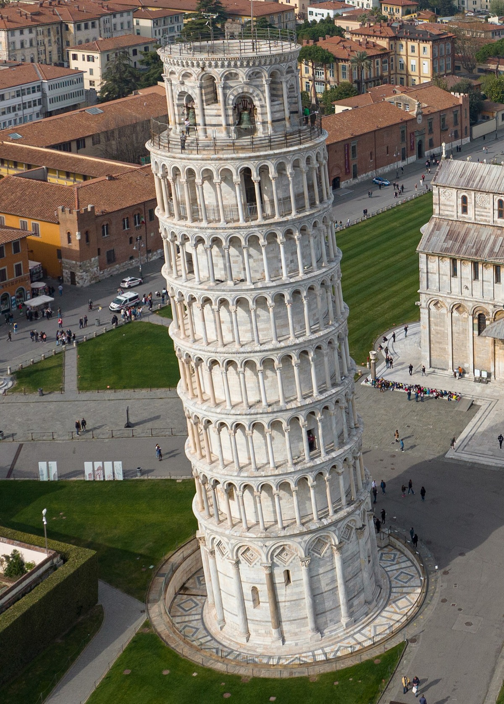
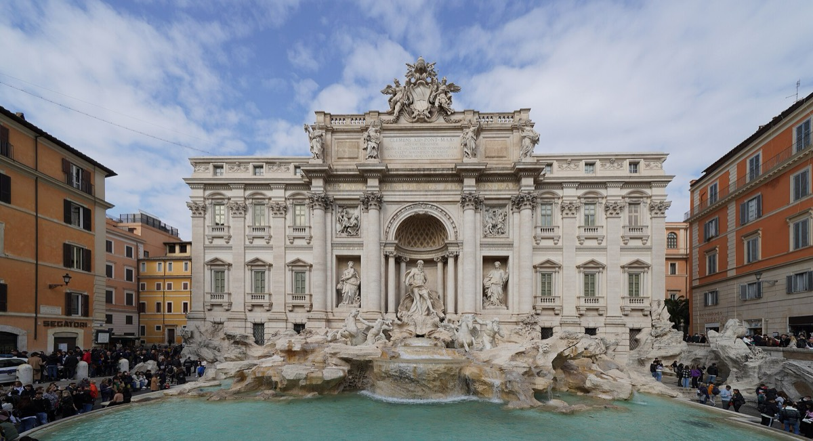
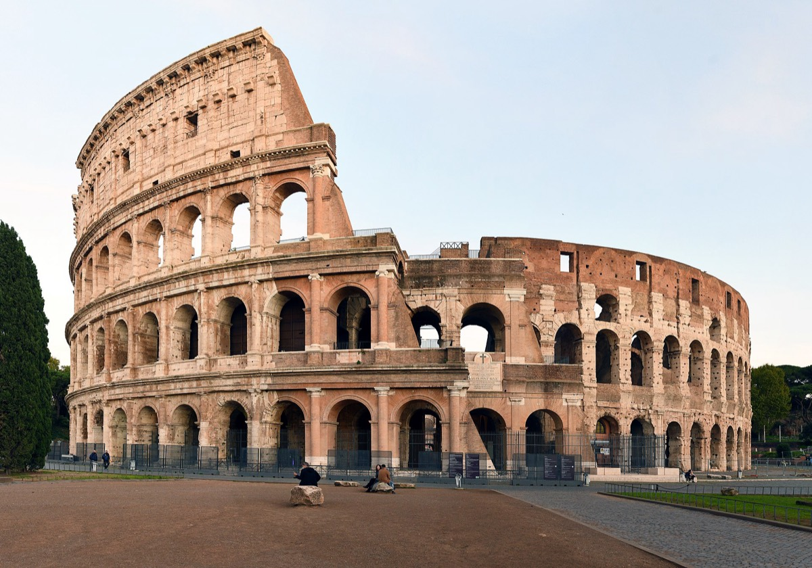
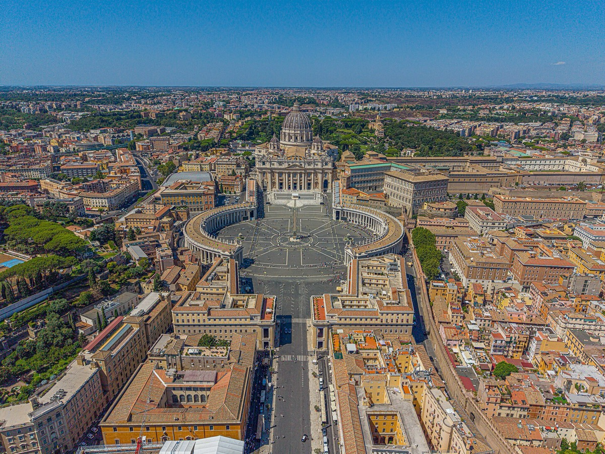
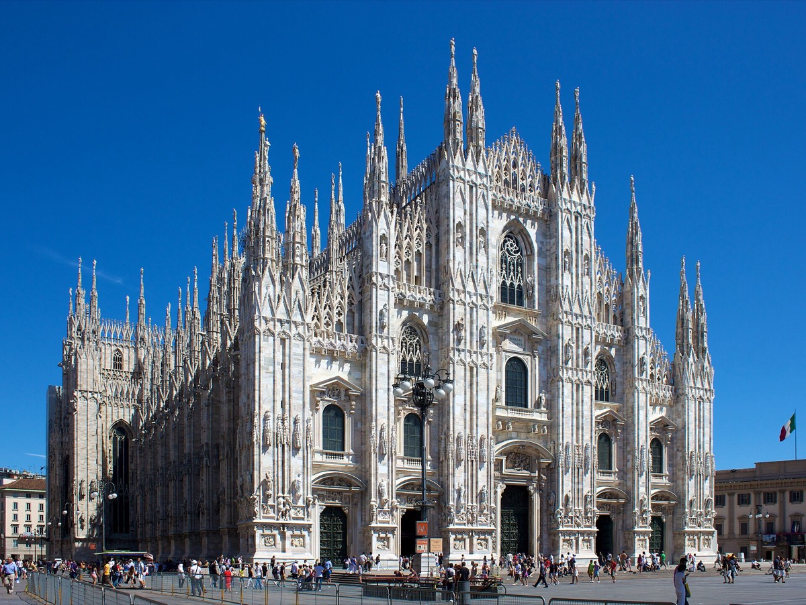
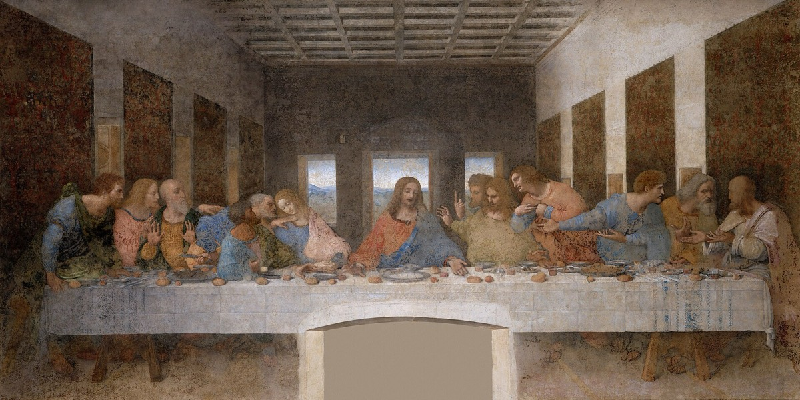
✅ Jungfrau Lodge · Apartment Renata（整個公寓，6 人），2027年6月11至14日。總價 CHF 2,253.60 ≈ HK$21,752（每 couple $7,251，已含城市稅及住宿稅）。
🚿 2 個全廁＋1 個獨立廁所 · 🍳 有全套廚房＋雪櫃 · 🌄 有露台、飯廳、客廳
✅ 改期後同價，一蚊都冇貴。 早餐 CHF 15/人/日（自選，有廚房其實可以自己搞）。
✅ Hotel Butterfly——3 間客房，2027年6月14至16日。總價 HK$15,587（每 couple $5,196）。免費取消。
🔄 換咗酒店：原本 Oasis-Zermatt Penthouse 係 3 晚，今次縮短到 2 晚所以轉咗普通酒店房，冇咗自己煮嘅廚房。
✅ 魯克雷奇亞旅館——3 間 Superior Double、6 位成人，2027年6月16至18日，已含早餐。免費取消到入住前 5 日（6月11日）——全程最寬鬆嗰間。
❄️ 冷氣 · ☕ 電熱水煲 · ☕ 咖啡機（🧊 冇雪櫃）
🚶 行 1 分鐘就到 Santa Lucia 火車站——6/16 由米蘭到、6/18 去佛羅倫斯，兩程拖喼都輕鬆。
⚠️ 完全冇𨋢：酒店已書面確認——冇地下房，全部房都要行樓梯，最高到 3 樓。酒店會盡量安排最低樓層，但保證唔到。
🧳 拎喼一定要爬樓梯。好彩行 1 分鐘就到火車站、一條橋都唔使過——威尼斯拖喼最辛苦係過橋（每條橋都係上落級），呢點已經慳返最多。6/16 細佬同女朋友同日 join，夠人手幫手抬。
入住 13:00–00:00 / 退房 08:00–11:00。
💰 可以再慳：上次係官網直訂（3 間房各 €400 含早餐）先平，今次經 Booking 貴咗約 HK$2,400 —— 值得再去官網問一次。
✅ 斯卡拉酒店——3 間客房、6 位成人，2027年6月18至21日（加咗一晚）。總價 HK$21,765（每 couple $7,255），已含早餐。入住前 3 日免費取消。
❄️ 各間客房獨立空調 · 🧊 冰箱 · ☕ 電熱水壺＋泡茶器具——全程唯一三樣齊晒嘅酒店
📍 就喺 SMN 火車站隔籬，6/18 由威尼斯到、6/21 去羅馬都方便。⚠️ 退房最遲 10:30，比一般早，6/21 朝早要留意。
多咗嗰一晚就係用嚟拆開「大衛像＋比薩＋Duomo」，四位長輩唔使一日走三場。
✅ Agoda 已訂 Genova Hotel——3 間 Classic Double/Twin，2027年6月21至24日，含早餐。總價 HK$14,230（每 couple $4,743，Agoda 減價重訂，慳咗 $1,970）。
2027年6月15日先扣款，6月18日前免費取消。另加城市稅 HK$1,222（現場畀）。
✅ Agoda 已訂 HD8 Hotel Milano（4 星）——3 間 Double Room，2027年6月24至26日。總價 HK$10,657（每 couple $3,552）。
🎯 位置大加分：就喺 Milano Centrale 正門口，6/26 拎住喼搭 Malpensa Express 去機場行幾步就到。
2027年6月20日先扣款，6月21日前免費取消。另加城市稅 HK$1,098（現場畀）。
⚠️ 房內有 A/C 同 minibar，但冇熱水煲——意大利酒店好常見，想沖茶就自己帶個摺疊電熱水壺。
| 路段 | 幾時訂 | 備註 |
|---|---|---|
| 少女峰 Jungfraujoch | 預約時段 | 連 Swiss Pass / 半價卡折扣，官網揀時段 |
| Gornergrat 齒軌 | 旺季早買 | 持 pass 有折；可現場但五月人多 |
| Visp → 米蘭（EC 跨國） | 3–4 個月前 | 經辛普朗隧道；Domodossola–米蘭段需訂位 |
| 米蘭 → 威尼斯 | 3–4 個月前 | Frecciarossa／Italo · 約 2.5h |
| 威尼斯 → 佛羅倫斯 | 3–4 個月前 | Frecciarossa／Italo · 約 2h |
| 佛羅倫斯 ⇄ 比薩（即日來回） | 毋須預訂 | 區域車，各約 1h，現場買飛即可 |
| 佛羅倫斯 → 羅馬 | 3–4 個月前 | Frecciarossa／Italo · 約 1.5h |
| 羅馬 → 米蘭 | 3–4 個月前 | Frecciarossa／Italo · 約 3h |
| 幾時 | 訂咩 | 備註 |
|---|---|---|
| ✅ 2026年8月 | 六間酒店（新日期） | ✅ 已重訂，全部免費取消 |
| 2027年1月 | 🛂 檢查 6 本護照有效期 | 申根：離境（6/27）後仲要有 3 個月，穩陣當 6 個月 |
| 2027年2月2日 （要搶） | 🎨 烏菲茲 + 瓦薩里走廊（6/18）· Accademia（6/19） | 2 月初一次過開放全年 4–12 月。走廊唔可以單買，必須連烏菲茲（約 €47），入烏菲茲要早走廊 2 鐘 |
| 2027年2月起 每兩星期 check | 🚆 意大利火車 5 程＋ Visp→米蘭 EC | ⚠️ 2027年6月12日係歐洲時刻表換季日，我哋 4 程都喺換季之後 —— 訂票窗口可能由 90–120 日縮到最短 30 日。2 月見唔到班次係正常，唔係網站壞 |
| 2027年3月14日 | 🚞 少女峰（6/12） | 5–10 月強制訂位、6–9 月會賣曬。可先買 CHF 10 座位預留，出發前睇天氣先買正票 |
| 2027年3月18日 | 🚆 目標訂票日（如已上線） | ⚠️ Domodossola–米蘭段可能要另外訂位（約 €10）。💡 Visp→米蘭可以試 SBB 網站，瑞士方面通常開得早啲 |
| 2027年3月20日 | ⛪ 佛羅倫斯 Ghiberti Pass（6/20） | ✅ 唔再係搶飛項目——決定咗唔爬圓頂、唔上鐘樓（鐵絲網）。只有圓頂需要固定時段，其餘景點 3 日內任入。大殿入場免費唔使飛。買 €15 Ghiberti Pass 就夠 |
| 2027年3月22日 （要搶） | 🗼 比薩斜塔爬塔（6/20 週日） | 正好 90 日前開窗。6–8 月週末早上時段 48 小時內賣曬。官網 opapisa.it，€20 |
| 2027年3月23日 週二 19:00 （最難搶） | 🎟️ 《最後的晚餐》（6/25） | 每季放飛，5–8 月嗰季 = 3 月尾週二意大利時間 12:00（2026 年係 3/24）。網上最多 5 張、電話最多 9 張 —— 8 個人要打電話或分兩單。分鐘計就爆 |
| 2027年3月25日 | ⛪ 米蘭 Duomo 天台露台（6/25） | 官網 3 個月前開賣，時段制有人流上限。有電梯／樓梯兩款（樓梯 251 級），長輩揀電梯 |
| 2027年4月1日 | 🏛️ 總督宮（6/17） | 訂 14:00 或之後，留 buffer 俾 Burano 遲到 |
| 2027年4月24日 香港朝早 6:00 | ⛪ 梵蒂岡博物館（6/23） | 60 日前歐洲午夜放飛。訂早上時段，落晝好熱好逼 |
| 2027年5月1日 | 🏨 最後決定換唔換酒店 · 買旅遊保險 | 免費取消到入住前約 3 日，但拖到最後就冇好嘢揀 |
| 2027年5月10日 | 🎫 Swiss Travel Pass · Gornergrat（6/15） | 買前用 SBB 官網逐程加埋比較。Gornergrat 唔使搶 |
| 2027年5月17日 🔴 死線 | 🚆 火車最後死線 | 6/16 前 30 日 —— 就算窗口縮到最短，今日都一定開咗。仲有邊程未訂就今日訂 |
| 2027年5月23日 （要搶） | 🏛️ 鬥獸場（6/22）＋ 🏛️ 萬神殿（6/22） | 鬥獸場 30 日前，唔係 60 日；官方售票已轉做 ticketing.colosseo.it。訂早上時段，冇遮陰。 ⚠️ 萬神殿而家強制預約 €7，19:00 閂、18:30 最後入場 |
| 2027年6月5日 | ⛪ 聖馬可大教堂（6/17） | 約 €3，幾日前訂就夠。唔訂要排 60–90 分鐘 |
| 2027年6月9日 ／6月24日 | 💺 揀位 | 出發前 48 小時免費 |
| 毋須預訂 | 佛羅倫斯⇄比薩區域車 · 瑞士短程車 · Iseltwald 巴士 | 現場買飛即可 |
| 地區 | 時期 | 日間氣溫 | 重點 |
|---|---|---|---|
| 瑞士山谷／市鎮 格林德瓦 · 策馬特村 | 6 月下旬 | 12–22°C | 溫暖企理，早晚仍涼 |
| 瑞士高山頂 少女峰 · Gornergrat 冰川平台 | 全年 | −5 至 5°C | 常年低溫有雪（冰川），纜車頂記得著羽絨 |
| 意大利 威尼斯 · 佛 · 羅馬 | 6月尾–7月頭 | 22–30°C | 開始入夏，正午好曬，記得防曬 |
| 項目（每人 / 日） | 🇨🇭 瑞士 | 🇮🇹 意大利 |
|---|---|---|
| 住宿（家庭房攤分） | CHF 80–150 | €40–90 |
| 三餐 | CHF 50–80 | €30–50 |
| 市內 / 區域交通 | CHF 10–25 | €5–15 |
| 景點 / 活動 | CHF 20–60 | €15–30 |
| 每人每日約 | HK$1,300–2,200 | HK$800–1,400 |
| 城市 | 酒店 | 晚 | 總額 | 每對 | 每對/晚 | 每人 | 每人/晚 |
|---|---|---|---|---|---|---|---|
| 格林德瓦 | Jungfrau Lodge · Renata | 3 | $21,752 | $7,251 | $2,417 | $3,625 | $1,208 |
| 策馬特 | Hotel Butterfly | 2 | $15,587 | $5,196 | $2,598 | $2,598 | $1,299 |
| 🇨🇭 瑞士小計 | 5 | $37,339 | $12,446 | $2,489 | $6,223 | $1,245 | |
| 威尼斯 | 魯克雷奇亞旅館 | 2 | $12,690 | $4,230 | $2,115 | $2,115 | $1,058 |
| 佛羅倫斯 | 斯卡拉酒店 | 3 | $21,765 | $7,255 | $2,418 | $3,628 | $1,209 |
| 羅馬 | Genova Hotel（含早餐） | 3 | $14,230 | $4,743 | $1,581 | $2,372 | $791 |
| 米蘭 | HD8 Hotel Milano | 2 | $10,657 | $3,552 | $1,776 | $1,776 | $888 |
| 🇮🇹 意大利小計 | 10 | $59,342 | $19,781 | $1,978 | $9,890 | $989 | |
| 全程 | 15 | $96,681 | $32,227 | $2,148 | $16,114 | $1,074 | |
| 分組 | 瑞士段 | 意大利段 | 總數 | 人均 |
|---|---|---|---|---|
| 我哋 6 個 | HK$37,339 | HK$59,342 | HK$96,681 | HK$16,114 |
| 細佬＋女朋友 | — | 自己另訂 | — | — |
{kind=link}
{kind=link}
{kind=link}
{kind=link}
{kind=link}
{kind=link}
{kind=link}
.jpg){kind=link}
{kind=link}
{kind=link}
{kind=link}
{kind=link}
.jpg){kind=link}
{kind=link}
{kind=link}